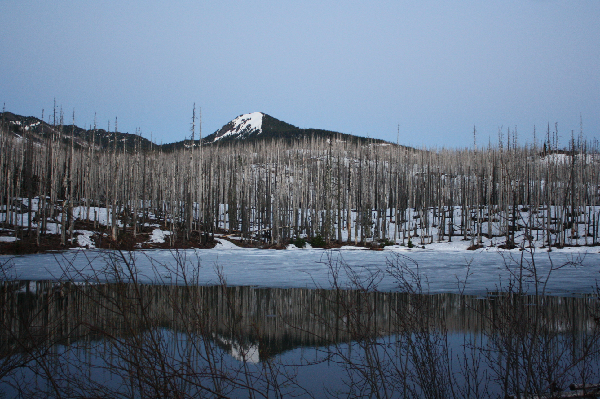
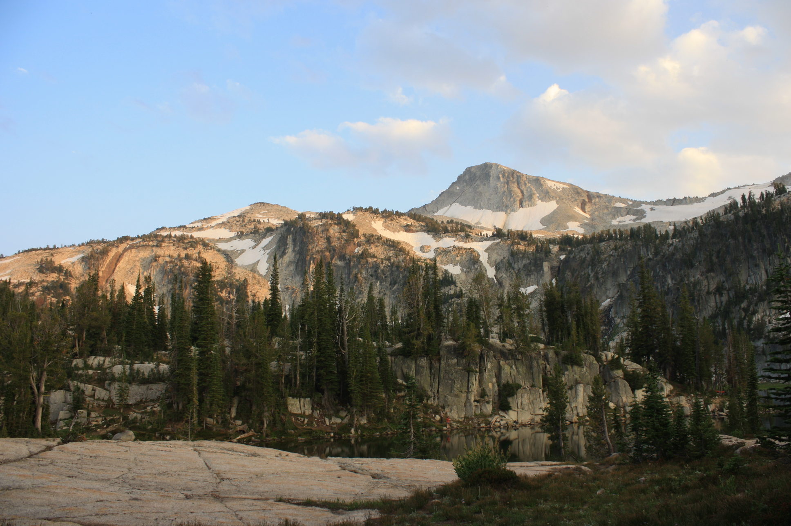

Backpacking The NorthWest
The purpose of this story map is to show and tell the adventures that my girlfriend and I go on with Finn the dog. Most of these trip so far have taken place in oregon, but I hope to expand them to the Pacific NorthWest as time goes by. I'm an geology and geospatial scientists and I love combining technology and recreation to make maps of all kinds of things. This is really just another way to help me learn about web mapping and programing languages. It is also a great way to show fellow hikers an in depth view of these trails. The images are georeferenced to the markers on the map. That each image was taken at the coordinates represented by the marker on the map. Each of these trails have been track by GPS with error not exceeding 12 meters so if you use the data keep that in mind. I’m going create links with KML or GPX file so people can upload the data to there own GPS receiver. This is a work in progress and continues to evolve, and I hope you enjoy it as must I do.
Hike to Jorn Lake
The hike to Jorn Lake is approximately 7 miles into the Jefferson Wilderness in the Cascade Range of Oregon. It's not a difficult trail when clear, but I advise to contact the local forest service about trail conditions, for we encountered down trees that made the a large portion a jungle gym.

The above image is looking approximately northeast showing Jorn Lake, and the white peak is in the background is Mt. Jefferson.
Hike to Lake of the Woods
The hike to Lake of the Woods is a 5 mile hike into the Jefferson Wilderness in the Cascade Range of Oregon. It covers some of the same route we took on the Jorn Lake trip, but once we got to Marion Lake we head northeast. Once again check with local forest service about trail conditions, for snowpack covered large areas of the trail which made it more of an adventure.
The image above shows a frosty Lake of the Woods and South Cinder Peak in the background.
Hike to Summit Lake
The hike to summit lake is about 4.5 miles from the Pacific Crest trail access on hwy 20. In my opinion this hike is the best bang for your buck, it’s relatively short, the overall ascent is low and the views are spectacular. However, the turnoff to summit lake was a little hard to find.

The image above is Summit Lake.
The Mirror Lake Heart Attack
The hike to Mirror Lake is about 8 miles from the Two Pan trailhead in the Eagle Cap Wilderness of Northeastern Oregon. What a place Eagle Cap is, it reminds me of the Sierra Nevadas and the hike was so awesome it gave me a heart attack, for real. 8 miles into the wilderness I had a heart attack, and I walked out thinking it was altitude sickness.
The image above is looking south at Mirror lake and the peak in the background is Eagle Cap.
Hike From Hell
This hike is about 2.5 miles long off the North Fork of the Saint Joe River. The Path is a multi-use trail for hikes, horses and dirt bikes. This was a day hike to reach a lookout station on Arid Peak. However, due to some bad trail information we miss judged the trail length and turn around halfway there. The Name is derived from the steep slope of the overall trail.